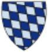

511003094 Greve Albrecht VI von Everstein
* 1230 Volkmarsen, Hessen, Tyskland
† 1289 Lubeck, Tyskland
Greve av Everstein. Herre till Örnhuvud
Blev högst 59 år
* 1230 Volkmarsen, Hessen, Tyskland
† 1289 Lubeck, Tyskland
Greve av Everstein. Herre till Örnhuvud
Blev högst 59 år
1022006188 Greve Ludwig I den äldre von Everstein
* omkring 1206 Everstein, Holzminden, Tyskland
† 1284 Everstein, Holzminden, Tyskland
Greve av Everstein, Herre av Örnhuvud
Blev ca 78 år
* omkring 1206 Everstein, Holzminden, Tyskland
† 1284 Everstein, Holzminden, Tyskland
Greve av Everstein, Herre av Örnhuvud
Blev ca 78 år
2044012376 Greve Albert III von Everstein
* mellan 1165 och 1173
† före 1218
Greve av Everstein
Blev högst 52 år
* mellan 1165 och 1173
† före 1218
Greve av Everstein
Blev högst 52 år
4088024752 Greve Adelbert II von Everstein
Greve av Everstein
Greve av Everstein

2044012377 Agnes von Wittelsbach
* omkring 1160 Wittelsbach Castle, Bayern, Tyskland
† 1218 Everstein, Holzminden, Tyskland
Blev ca 58 år
* omkring 1160 Wittelsbach Castle, Bayern, Tyskland
† 1218 Everstein, Holzminden, Tyskland
Blev ca 58 år
4088024754 Hertig Otto VI of Wittelsbach
* omkring 1130 Kelheim, Nederbayern, Tyskland
† 1189 Pfullendorf, Bayern, Tyskland
Greve av Bayern, Greve av Wittelsbach
Blev ca 59 år
* omkring 1130 Kelheim, Nederbayern, Tyskland
† 1189 Pfullendorf, Bayern, Tyskland
Greve av Bayern, Greve av Wittelsbach
Blev ca 59 år

4088024755 Grevinnan Benedikte von Moosburg
* efter 1140 Tyskland
† Bayern, Tyskland
Grevinna av Wittelsbach
* efter 1140 Tyskland
† Bayern, Tyskland
Grevinna av Wittelsbach

1022006189 Grevinnan Adela von Gleichen
* omkring 1215 Gleichen, Lower Saxony, Tyskland
† före 1266 Tyskland
Grevinna av Everstein
Blev ca 50 år
* omkring 1215 Gleichen, Lower Saxony, Tyskland
† före 1266 Tyskland
Grevinna av Everstein
Blev ca 50 år
2044012378 Greve Lambert II von Gleichen-Tonna
* omkring 1190 Thyringen, Vorarlberg, Österrike
† 1227 Gleichen, Lower Saxony, Tyskland
Greve av Gleichen och Greve av Tonna
Blev ca 37 år
* omkring 1190 Thyringen, Vorarlberg, Österrike
† 1227 Gleichen, Lower Saxony, Tyskland
Greve av Gleichen och Greve av Tonna
Blev ca 37 år
4088024756 Greve Erwin von Gleichen
* omkring 1130 Tyskland
† 1193 Tyskland
Greve av von Gleichen
Blev ca 63 år
* omkring 1130 Tyskland
† 1193 Tyskland
Greve av von Gleichen
Blev ca 63 år

2044012379 Grevinnan Sophie von Orlamunde
* omkring 1180 Orlamunde, Thyringen, Tyskland
† 1244 Erfurth, Thyringen, Tyskland
Grevinna av Weimar och Orlamunde
Blev ca 64 år
* omkring 1180 Orlamunde, Thyringen, Tyskland
† 1244 Erfurth, Thyringen, Tyskland
Grevinna av Weimar och Orlamunde
Blev ca 64 år
4088024758 Greve Siegfried III von Weimar-Orlamunde
* omkring 1155
† 1206
Greve av Weimar-Orlamunde
Blev ca 51 år
* omkring 1155
† 1206
Greve av Weimar-Orlamunde
Blev ca 51 år

4088024759 Prinsess Sofie av Danmark
* 1161 Roskilde, Danmark
† 1208 Orlamunde, Thyringen, Tyskland
Prinsessa av Danmark
Blev högst 47 år
* 1161 Roskilde, Danmark
† 1208 Orlamunde, Thyringen, Tyskland
Prinsessa av Danmark
Blev högst 47 år